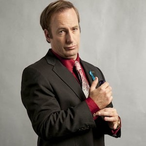

 James "Jimmy" Morgan McGill, conocido posteriormente como Saul Goodman, es un abogado criminal de Albuquerque conocido en la ciudad por sus peculiares anuncios televisivos que se emiten a altas horas de la noche, en el que menciona su lema, "Better Call Saul!”. El nombre de Goodman es inventado para atraer a más clientes, ya que Saul Goodman se pronuncia como "it's all good man" (está todo bien, hombre). A pesar de su turbia apariencia, Saul sin duda es un hombre muy competente en sus asuntos criminales, eficiente a la hora de descubrir lagunas legales en casos y capaz de negociar buenos tratos en favor de sus clientes. Tiene una gran familiaridad con el mundo criminal y conexiones con algunos de los más influyentes distribuidores, como Gus Fring. Además, tiene contratados los servicios de un investigador privado veterano llamado Mike, que respeta a Saul simplemente por lo que es y a menudo ejecuta órdenes ilegales para Saul y Gus como limpiar escenas del crimen o espiar a personas.